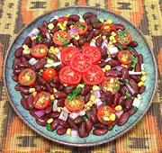

|
Githeri SaladEast Africa, Kenya - Githeri Salad | ||||
| Makes: Effort: Sched: DoAhead: |
2-1/2 # ** 45 min Most |
In central Kenya, Githeri is a very popular stew of whole beans and whole corn kernels, but it also sometimes appears as a salad. This is a good party salad as it won't wilt. Also see Comments. | |||
|
3 1-1/2 6 5 1/2 3 2/3 1/3 |
c c oz oz c T t t |
Beans, Cooked (1) Corn, Cooked (2) Cherry Tomatoes Onion, Red Cilantro Leaves Lime Juice Salt Pepper |
IF using Dried Beans - (8 hrs - 10 min work)
|